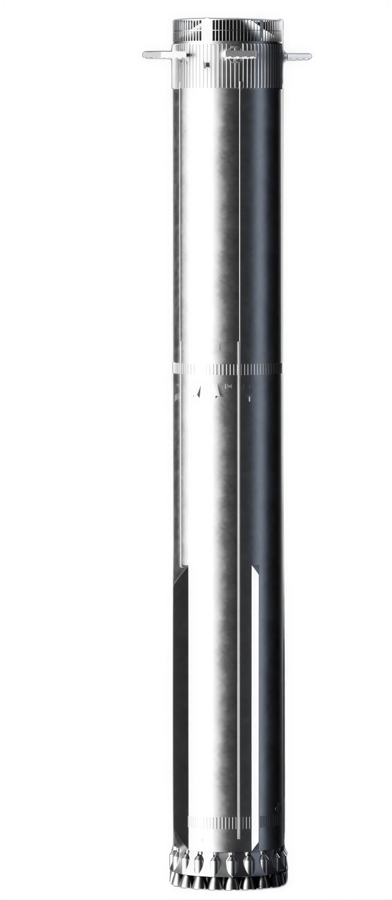
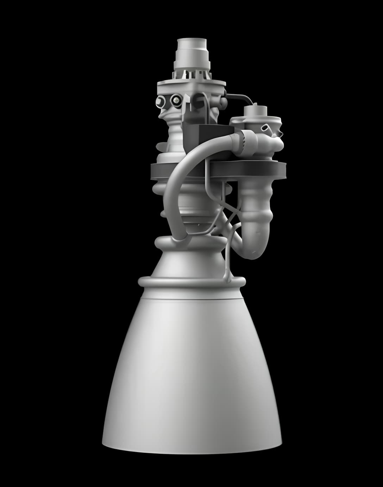

.jpg)
Starship is the world's most powerful fully reusable spacecraft, standing 50 metres tall and designed to carry humans and cargo to the Moon, Mars, and beyond. Built by SpaceX, it represents the next generation of space exploration — capable of transporting up to 150 tonnes to low Earth orbit per launch.
Super Heavy is the first stage of the Starship system, generating over 74.3 meganewtons of thrust from 33 Raptor engines — more than double the Saturn V. After launch, the booster performs a controlled return to the launch site, where it is caught mid-air by the Mechazilla tower arms, enabling rapid reuse with zero hardware loss.
Stack Overview
Full Stack height: 123m
Booster Engines: 33 x Raptor 2
Ship Engines 3 sea-level + 3 vacuum Raptor
Max Liftoff thrust:74.3 MN
Payload to LEO (reusable): 100+ tonnes
Payload to LEO (expendable):150 tonnes
Propellant: Liquid methane + LOX
Hull material: 301 stainless steel
Reentry tiles: ~18,000 hexagonal ceramic
Starship is designed for full reusability — both the Super Heavy booster and Starship upper stage land and fly again instead of being discarded. The booster gets caught by the launch tower's arms, while Starship survives reentry using a steel hull and ceramic heat shield tiles. It's powered by Raptor engines, which burn methane and liquid oxygen — efficient, clean-burning, and practical for future Mars missions since methane can potentially be made there. The core idea: stop throwing away expensive rocket parts, and launch costs fall dramatically.

The Raptor 3 is SpaceX's third-generation full-flow staged combustion engine, and it is unlike anything that has come before it. Burning liquid methane and liquid oxygen, it represents the closest humanity has ever come to the theoretical limits of chemical rocket propulsion.
Where previous engines wore their complexity on the outside — a tangle of pipes, cables, and heat shields — Raptor 3 internalises almost all external connections, eliminating the need for engine heat shields entirely. As Elon Musk put it: "The amount of work required to simplify the Raptor engine, internalise secondary flow paths and add regenerative cooling for exposed components was staggering. It is a work of art." The result is an engine that looks almost impossibly clean.
Raptor 3 achieves 280 tonnes-force of thrust at sea level with a specific impulse of 350 seconds — a 21% improvement over Raptor 2 and 51% over Raptor 1, while reducing dry mass by 7% to approximately 1,525 kg. Chamber pressure reaches up to 350 bar in testing — far beyond any production rocket engine in history. The goal is to push past 300 tonnes-force per engine, enabling 10,000 tonnes of combined thrust from 33 engines on Super Heavy alone.

Thrust (sea level): 280 tf
Engine mass: 1,525 kg
Thrust (vacuum variant): 275 tf
Fuel: Liquid methane + LOX
Chamber pressure: up to 350 bar
Cycle: Full-flow staged combustion